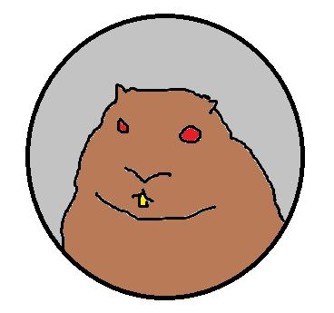

Phil has been making predictions since 1887 and has predicted more Winter for nearly all of his early life. The only times he has deviated from the course of predicting Winter and Spring is in 1942 when he predicted "War Clouds" were over part of his shadow. Given the environment he lived in, I would say that Phil was no fan of the war movement at the time.
| More Winter | Early Spring | Other | Total |
|---|---|---|---|
| 109 | 20 | 12 | 141 |